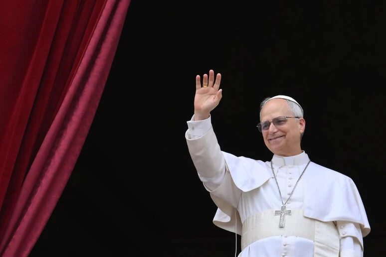

Medalha de Honra ao Papa Leão
Queridos irmãos, recebemos a notícia agora que os Estados Unidos preparam uma medalha de honra ao Papa Leão. Essa medalha de honra que será entregue ao Papa Leão, inclusive ele fará um discurso designado especialmente para as celebrações dos 250 anos de independência da América. Não somente isso, os Estados Unidos também prestarão uma homenagem, vão dedicar os Estados Unidos a Maria. Meus amados, nós estamos vendo os cumprimentos proféticos à nossa vista, estampados.
O que mais precisa acontecer para que eu ponha em ordem a minha casa, para que eu ponha em ordem a minha vida? Para que eu não somente decida, mas realmente morra, para que o meu eu morra completamente, porque esse ano promete, muitas coisas vão acontecer esse ano. Apertem os cintos, meus queridos. Sentimos o cheiro da volta de Jesus no ar.
Mas eu não me refiro esse ano à volta de Jesus. Eu me refiro esse ano a acontecimentos proféticos contundentes. Aquele acontecimento profético que será o último chamado para as pessoas do mundo. E, infelizmente a porta estará se fechando para os adventistas do sétimo dia para sempre.
A porta da misericórdia, esse evento chamado o descanso dominical obrigatório. Tudo está planejado, as pessoas estão nos seus cargos, os projetos já estão na presidência dos Estados Unidos, bastando apenas serem assinados ou por uma decisão de Congresso ou por uma assinatura do presidente. Pois a Heritage Foundation está trabalhando com isso. Uma instituição que já conseguiu que mais de 50% de suas petições fossem aprovadas no governo federal agora tem essa petição do descanso dominical apresentada ao governo federal.
Você acha que vai ser negado? Você tem acompanhado as notícias? Você está vendo as grandes movimentações? Você tá vendo a imprensa pedindo descanso dominical?
Você tem observado os religiosos pedindo o descanso dominical? Você tem observado os políticos, senadores, deputados eh de estados também federais, todos unidos nesse grande movimento de descanso dominical, meus queridos, por que que é tão falado a questão do descanso dominical? Porque o descanso dominical obrigatório será um marco profético, histórico, profético, aonde irá desencadear todas as coisas. A ruína dos Estados Unidos, financeira econômica, a e moral, a ruína junto com o mundo também, um efeito dominó.
Não somente isso, além dessas ruínas, virá então o decreto de morte no futuro para aqueles que se negarem a guardar os mandamentos de homens, as tradições de homens quiserem seguir somente a Bíblia, seremos acusados de tradicionalistas, de extremistas, eh, toda sorte de coisa. Assim como acusaram na época medieval, na Santa Inquisição, entre aspas, né, acusavam pessoas inocentes de bruxaria, de canibalismo outras coisas.
Não fique com esse pensamento poético de que você será acusado, preso, levado para os tribunais, paraas prisões, campos de trabalhos forçados, simplesmente porque adventista não tem esse pensamento tão romântico ou simplesmente porque descansa no dia do sábado, mas seremos acusados de todas as coisas, coisas que podemos imaginar coisas que não podemos nem imaginar seremos acusados. É chegado o tempo, meu querido.
É chegado o tempo. Eu tô vendo que muitas famílias não estão preparadas. Eu estou vendo que muitos pais não estão preparados ou filhos não estão preparados. Muito a gente investe, a gente investe em educação, a gente investe em orientação, a gente investe em aconselhamento.
Mas em breve, meus queridos, em breve a porta estará fechando. Em breve a porta da graça, a porta da misericórdia vai se fechar pela vai ser definitivo. Eu quero dizer a vocês que será tarde demais para esses crentes que têm toda sorte de luz, mas continuam nos seus caminhos rebeldes. E a nós, os pais, que só nos resta interceder pelos filhos.
Meus queridos, nós estamos no fim do tempo do fim. Esse ano de 2026 ainda vai acontecer muita coisa. Se prepare.
Vamos avançar no crescimento do caráter cristão. Vamos avançar na morte do eu. Vamos avançar na presença gloriosa de Jesus, do Espírito Santo do Pai Celestial que habita em nós. A palavra diz: "Se alguém me ama, guardará a minha palavra eu o meu pai viremos nele faremos morada".
O Espírito Santo estará está conosco também, porque Jesus falou: "Não vos deixarei órfãos, eis que o consolador virá ele estará eu estarei com vocês até o fim dos séculos. ". Meus queridos, esse é o momento não de desanimar, esse é o momento de avançar com toda a força que existe em nosso organismo. E ainda o Senhor, quando essa força se acabar, o Senhor enviará ainda mais força do seu depósito celestial. Vamos avançar, igreja.
Então, esteja atentos, olhos bem abertos, coração vigilante, sabendo que o tempo tá se acabando. Vamos avançar, igreja, vamos avançar. Oremos como nunca oramos. E leiamos a palavra de Deus como nós nunca lemos em nossa vida.
E morramos para o eu como nunca aconteceu em nossa vida. Ou os olhos pregados no céu os pés na terra. Que o Senhor te abençoe te guarde. Nos vemos em nosso próximo artigo, em nome de Jesus.
Amém. E Amém!.
Quer saber mais? Comenta aqui em baixo!
👉 E toda a terra se maravilhou seguindo a besta... Apocalipse 13:3-4
- Essencialista